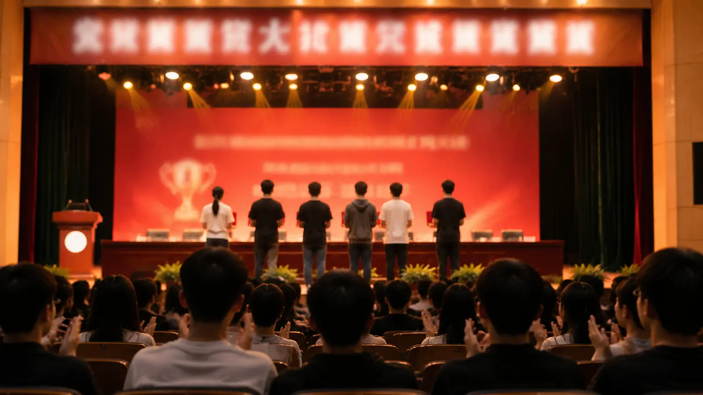
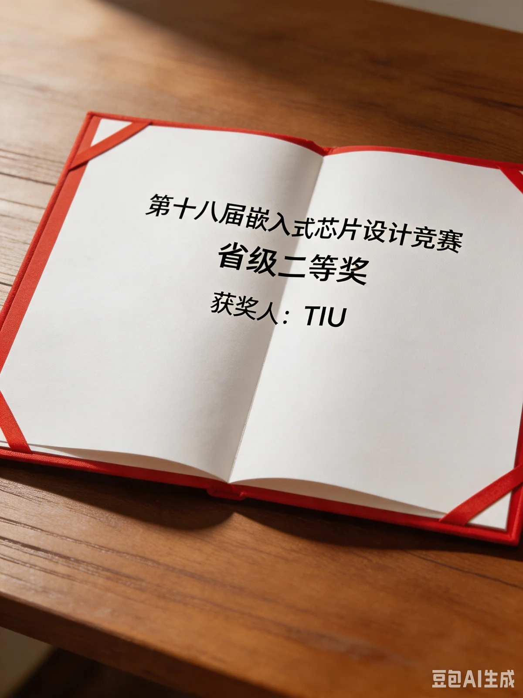

首页 › 组织架构 › 竞赛部
竞赛部
科创赛事服务与培育部门
部门简介
竞赛部主打科创赛事服务与培育工作，主要负责各级各类科创、创新创业赛事的宣传组织、报名统筹、备赛帮扶、作品汇总与人才选拔，是学院科创竞赛工作的核心服务部门。
主要工作事项
赛事宣传普及——针对“挑战杯”系列竞赛、全国大学生电子设计竞赛、嵌入式芯片设计竞赛、研究生电子设计竞赛等各类科创赛事，通过推文、宣讲、班级通知、社群推送等方式，普及赛事报名条件、参赛赛道、作品要求、赛程安排，打通赛事信息壁垒。
赛事组织统筹——负责院内选拔赛、赛事预热活动的策划开展，统一收集全院学生赛事报名信息、参赛作品，完成作品初审、信息汇总、名单上报、结果公示等工作，保障赛事报名流程规范、公平公正。
备赛帮扶指导——搭建赛事帮扶体系，对接专业老师、往届获奖优秀学长学姐，常态化开展赛事备赛讲座、答疑交流会、作品打磨指导、答辩技巧培训，针对性解决参赛团队在项目构思、作品制作、文本撰写、现场答辩中的问题。
赛事成果整理与梯队建设——汇总全院赛事获奖成果，建立科创赛事人才库与经验资料库，整理优秀作品、备赛经验，搭建低年级赛事启蒙培育体系，形成科创竞赛传帮带机制，持续培育学院科创竞赛力量。
2026 年度获奖名单
近期院内获奖信息公示（节选）。
| 赛事 | 奖项 | 获奖人 | 备注 |
|---|---|---|---|
| 第十八届嵌入式芯片设计竞赛 | 省级二等奖 | 陈曦 | — |
| 第十八届嵌入式芯片设计竞赛 | 省级二等奖 | TIU | 名单与报名记录不符，待核对 |
（注：获奖名单中存在一条无法对应的记录，批注已做涂黑处理。）

